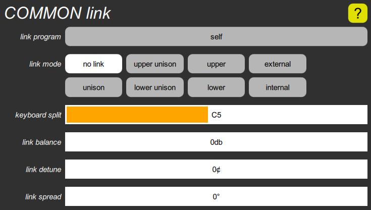

COMMON link cluster

This contains all parameters pertaining to the link. The link program button shows the number and name of the program linked to (or that would be linked to if the link mode weren’t set to “no link”). It can only be set by using the Program popup from the Programs screen, except that it can be reset to its default value, which is “self” by long-pressing the button. This choice causes the main and link to play the same sound, and for any edits to be directed to both of them. In “link unison” mode, this sounds similar to voice stacking, except that the two sounds still have independent main transpose and link transpose parameters.
Note that the program number shown before the name may be either a 1- or 2-digit number to link to the program in the same bank as the current program, or a 3-digit number to link to a specific bank. The difference is significant if the current program is ever moved to a different bank.
The link mode buttons select which keys play the main sound and which play the link sound. The keyboard split slider sets the keyboard split point, which is used in the modes with “upper” or “lower” in their names. It is, however, easier to set the keyboard split from the Digital Chroma’s control panel, by pressing SET SPLIT and then pressing the key that is to be the bottom of the upper portion of the keyboard.
The last three sliders introduce variations into the main and link sounds, but only when a link is in effect. The link balance adusts the relative volumes, the link detune adjusts their relative tuning, and the link spread nudges or forces them toward opposite sides of the pan range.